import skrf as rf
%matplotlib inline
from matplotlib import pyplot as plt # for advanced smith chart only
import skrf as rf
import numpy as np
filenames = []
networks = []S11, S21 and S22 for TL-ANT2409A measurements on broadside
Setup
networks.append(rf.Network("Lab_5/0-360/0d.S2P"))
for i in range(36):
# we're looking at txt files first
filename = 'Lab_5/0-360/' + f"{(i+1)*10}.S2P"
networks.append(rf.Network(filename))## plot s11
fig, axs = plt.subplots(1, 2, figsize=(10, 5))
rf.stylely()
networks[0].plot_s_smith(draw_labels=True, linewidth=1, ax=axs[0])
networks[15].plot_s_smith(draw_labels=True, linewidth=1, ax=axs[1])
axs[0].set_title("Smith Chart, 0º", fontsize=10)
axs[1].set_title("Smith Chart, 160º", fontsize=10)Text(0.5, 1.0, 'Smith Chart, 160º')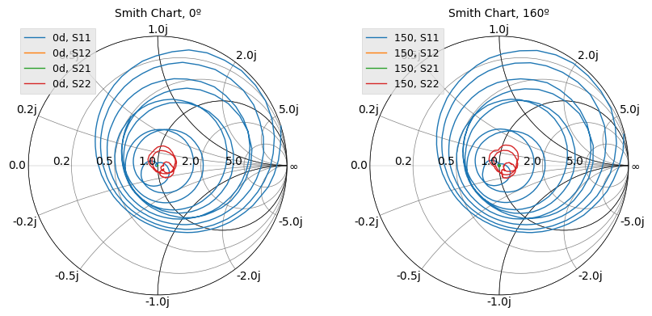
fig, axs = plt.subplots(1, 2, figsize=(10, 5))
rf.stylely()
networks[0].s11.plot_s_smith(draw_labels=True, linewidth=1, ax=axs[0])
networks[15].s11.plot_s_smith(draw_labels=True, linewidth=1, ax=axs[1])
axs[0].set_title("Smith Chart, 0º", fontsize=10)
axs[1].set_title("Smith Chart, 160º", fontsize=10)Text(0.5, 1.0, 'Smith Chart, 160º')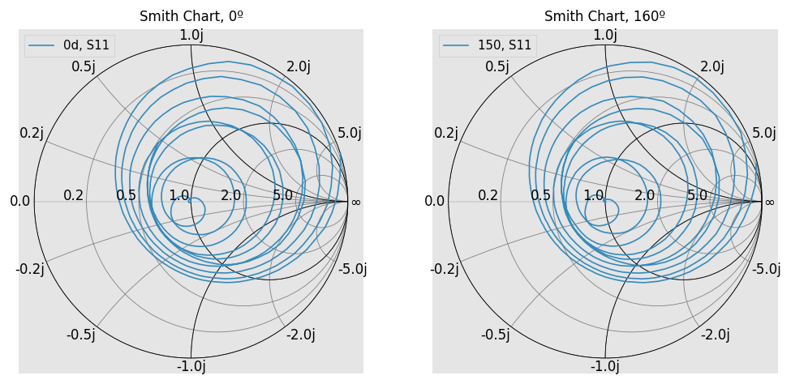
fig, axs = plt.subplots(1, 2, figsize=(10, 5))
rf.stylely()
networks[0].s21.plot_s_smith(draw_labels=True, linewidth=1, ax=axs[0])
networks[15].s21.plot_s_smith(draw_labels=True, linewidth=1, ax=axs[1])
axs[0].set_title("Smith Chart, 0º", fontsize=10)
axs[1].set_title("Smith Chart, 160º", fontsize=10)Text(0.5, 1.0, 'Smith Chart, 160º')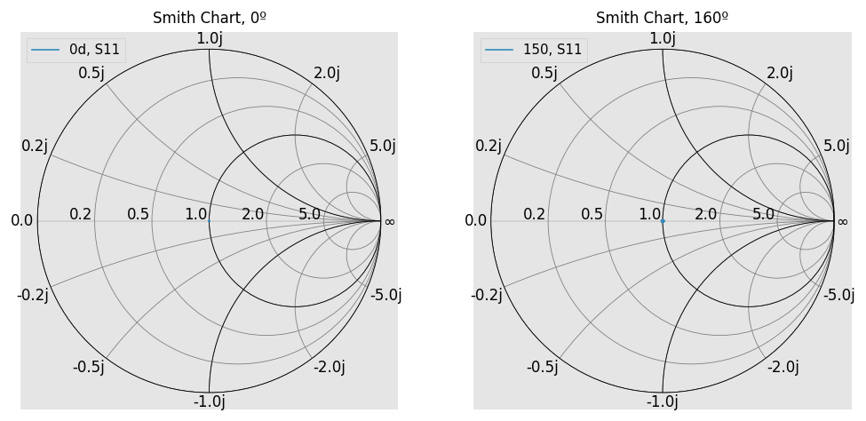
fig, axs = plt.subplots(1, 2, figsize=(10, 5))
rf.stylely()
networks[0].s22.plot_s_smith(draw_labels=True, linewidth=1, ax=axs[0])
axs[0].set_title("Smith Chart, 0º", fontsize=10)
axs[1].set_title("Smith Chart, 160º", fontsize=10)
networks[15].s22.plot_s_smith(draw_labels=True, linewidth=1, ax=axs[1])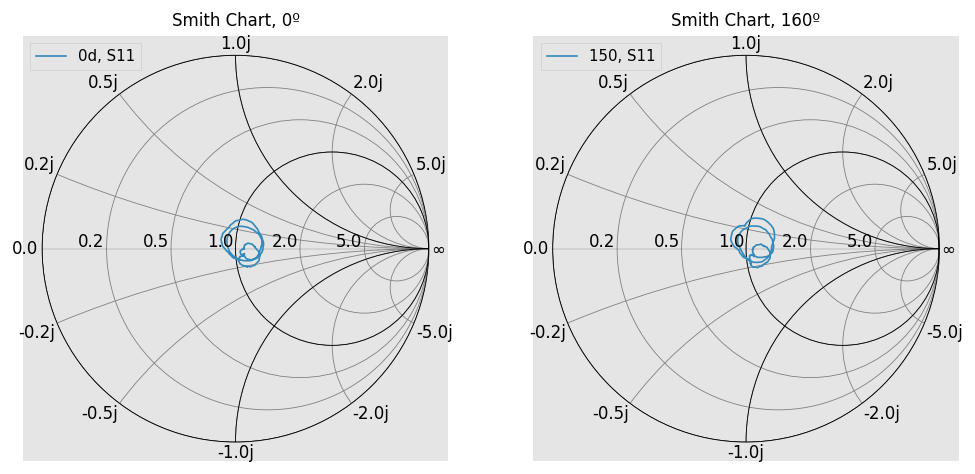
fig, axs = plt.subplots(1, 2, figsize=(10, 5))
rf.stylely()
networks[0].plot_s_db(lw=2, ax=axs[0])
axs[0].set_title("All S Parameter Measurements for Unknown Antenna, 0º", fontsize=10)
networks[15].plot_s_db(lw=2, ax=axs[1])
axs[1].set_title("All S Parameter Measurements for Unknown Antenna, 150º", fontsize=10)Text(0.5, 1.0, 'All S Parameter Measurements for Unknown Antenna, 150º')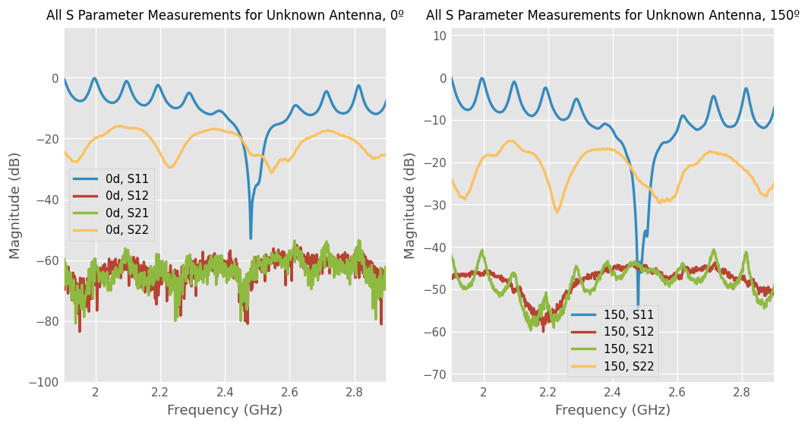
networks[0]["2400mHz"].s21.s_dbarray([[[-61.10657392]]])networks[0]['2.45-2.5ghz'].plot_s_db(lw=2)
plt.title("S Parameters, Unknown Antenna, Spanning 2.45-2.5 GHz, 0º")Text(0.5, 1.0, 'S Parameters, Unknown Antenna, Spanning 2.45-2.5 GHz, 0º')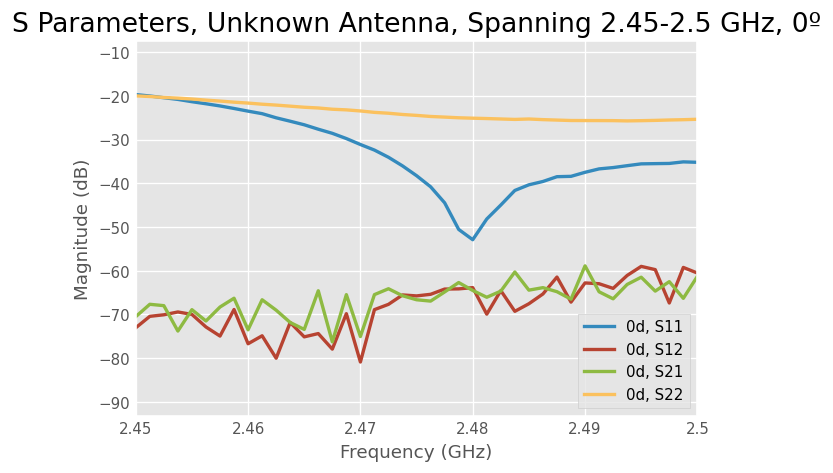
Calculations showing gain extraction from TL-ANT2409A
Calculate the Gain of Antenna
## Gather all of the S21 data together
s21_data_q1 = []
for i in range(len(networks)):
s21_v = networks[i]['2.48ghz'].s21.s_db[0][0][0]
s21_data_q1.append(s21_v)## Gain of Horn Antenna (G_TX) at 2.4 GHz
g_tx = 13.03 # dBm
l_val = 3e8/(2.48e9) # meters
D_val = 1.4478 # meters
air_loss = 20 * np.log10(l_val / (4 * np.pi * D_val))g_rx_list_q1 = []
for s21 in s21_data_q1:
val = s21 - g_tx - air_loss
g_rx_list_q1.append(val)Radiation pattern for TL-ANT2409A
Discussion of antenna type for TL-ANT2409A
angles = np.linspace(0, 360, 37)
angles = angles * 2 * np.pi / 360.0
# plot
ax = plt.subplot(111, polar=True)
plt.suptitle("Radiation Pattern of Unknown Antenna")
# set zero west
# let set an azimuth for example, pi
plt.plot(angles[1:], g_rx_list_q1[1:])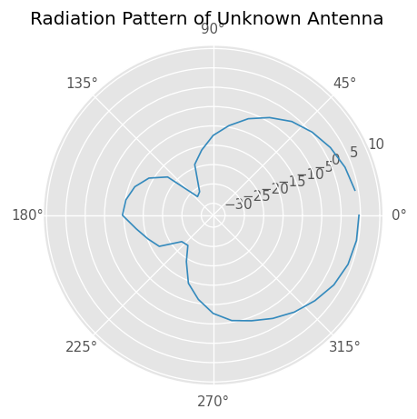
# plot the impedance vs frequency - need to use s11
s11_val = networks[0].s11.s_db
s11_val = np.expand_dims(s11_val, [1,2] )
s11_val = s11_val[:,0,0,0,0]
z_impedance_map = [ np.abs(50*(1-i)/(i + 1)) for i in s11_val]
plt.plot(networks[0].f, z_impedance_map, label="Impedance [Ohms]")
plt.plot(networks[0].f, s11_val*100, label="S11 Value", alpha=0.5)
plt.title("Plot of the Impedance value with Backdrop showing S11")
plt.xlabel("frequency (Hz)")
plt.ylabel("Impedance [Ohms]")
plt.legend()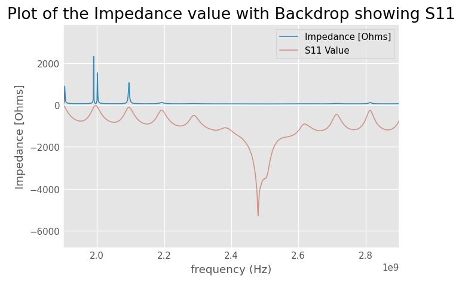
Discussion of patch antenna theory for machined antenna
filenames_patch = []
networks_patch = []
angles_patch = [0,20,40,60,80,100,120,140,160,180,200,220,240,260,280,300,320,340,360]
for i in angles_patch:
# we're looking at txt files first
filenames_patch = 'Lab_5/patch-0-360/' + f"{i}.S1P"
networks_patch.append(rf.Network(filenames_patch))
# networks_patch[0].plot_s_db(lw=2)## Gather all of the S21 data together
s21_data_q2_1 = []
for i in range(len(networks_patch)):
s21_v = networks_patch[i]['1.4Ghz'].s_db[0][0][0]
s21_data_q2_1.append(s21_v)## Gain of Horn Antenna (G_TX) at 2.4 GHz
g_tx = 4.55 # dBm
l_val = 3e8/(1.4e9) # meters
D_val = 1.4478 # meters
air_loss = 20 * np.log10(l_val / (4 * np.pi * D_val))g_rx_list_q2_1 = []
for s21 in s21_data_q2_1:
# print(s21)
val = s21 - g_tx - air_loss
g_rx_list_q2_1.append(val)
# print(g_rx_list_q2)Extracted radiation pattern of patch antenna
# plot
ax = plt.subplot(111, polar=True)
# set zero west
# let set an azimuth for example, pi
angles_patch = [p * 2 * np.pi / 360 for p in angles_patch]
plt.plot(angles_patch, g_rx_list_q2_1)
plt.title("Patch Antenna, Double Resonant Frequency")Text(0.5, 1.0, 'Patch Antenna, Double Resonant Frequency')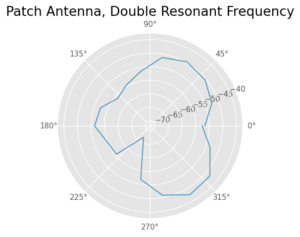
A little over resonant frequency
filenames_2 = []
networks_2 = []
s21_data_q2_2 = []
num_points=18
for i in range(num_points):
# we're looking at txt files first
filenames_2 = 'Lab_5/patch-0-360-better/' + f"{i*20}.S2P"
networks_2.append(rf.Network(filenames_2))
for i in range(len(networks_2)):
s21_v = networks_2[i]['728.155Mhz'].s21.s_db[0][0][0]
s21_data_q2_2.append(s21_v)
g_tx = 4.55 # dBm
l_val = 3e8/(728.155e6) # meters
D_val = 1.4478 # meters
air_loss = 20 * np.log10(l_val / (4 * np.pi * D_val))
g_rx_list_q2_2 = []
for s21 in s21_data_q2_2:
val = s21 - g_tx - air_loss
g_rx_list_q2_2.append(val)
# plot
ax = plt.subplot(111, polar=True)
# set zero west
# let set an azimuth for example, pi
angles_2 = np.linspace(0, 360, num_points)
angles_2 = angles_2 * 2 * np.pi / 360
plt.plot(angles_2, g_rx_list_q2_2)
plt.title("Patch Antenna Frequency")
print(max(g_rx_list_q2_2))-9.445195174000219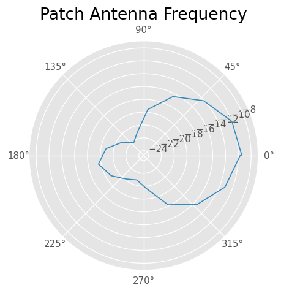
networks_2[0].s21.plot_s_db(label="S21")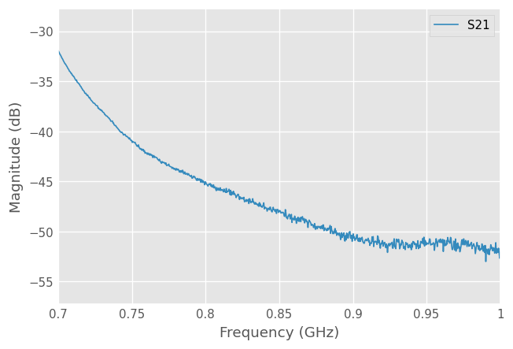
S11, S21 and S22 for patch antenna measurements on broadside
## plot s11
fig, axs = plt.subplots(1, 5, figsize=(50, 10))
rf.stylely()
networks_2[0].s11.plot_s_smith(draw_labels=True, linewidth=1, ax=axs[0])
networks_2[5].s11.plot_s_smith(draw_labels=True, linewidth=1, ax=axs[1])
networks_2[10].s11.plot_s_smith(draw_labels=True, linewidth=1, ax=axs[2])
networks_2[14].s11.plot_s_smith(draw_labels=True, linewidth=1, ax=axs[3])
networks_2[17].s11.plot_s_smith(draw_labels=True, linewidth=1, ax=axs[4])
axs[0].set_title("Smith Chart, Patch Antenna 0º", fontsize=10)
axs[1].set_title("Smith Chart, Patch Antenna 160º", fontsize=10)Text(0.5, 1.0, 'Smith Chart, Patch Antenna 160º')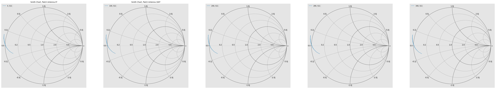
## plot s21
fig, axs = plt.subplots(1, 5, figsize=(50, 10))
rf.stylely()
networks_2[0].s21.plot_s_smith(draw_labels=True, linewidth=1, ax=axs[0])
networks_2[5].s21.plot_s_smith(draw_labels=True, linewidth=1, ax=axs[1])
networks_2[10].s21.plot_s_smith(draw_labels=True, linewidth=1, ax=axs[2])
networks_2[14].s21.plot_s_smith(draw_labels=True, linewidth=1, ax=axs[3])
networks_2[17].s21.plot_s_smith(draw_labels=True, linewidth=1, ax=axs[4])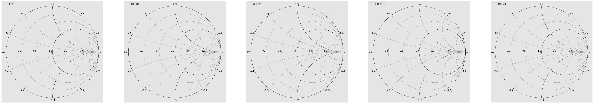
## plot s22
fig, axs = plt.subplots(1, 5, figsize=(50, 10))
rf.stylely()
networks_2[0].s22.plot_s_smith(draw_labels=True, linewidth=1, ax=axs[0])
networks_2[5].s22.plot_s_smith(draw_labels=True, linewidth=1, ax=axs[1])
networks_2[10].s22.plot_s_smith(draw_labels=True, linewidth=1, ax=axs[2])
networks_2[14].s22.plot_s_smith(draw_labels=True, linewidth=1, ax=axs[3])
networks_2[17].s22.plot_s_smith(draw_labels=True, linewidth=1, ax=axs[4])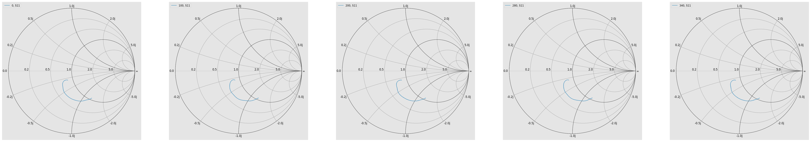
fig, axs = plt.subplots(1, 5, figsize=(50, 10))
rf.stylely()
networks_2[0].plot_s_db(lw=2, ax=axs[0])
axs[0].set_title("All S Parameter Measurements for Unknown Antenna, 0º", fontsize=20)
networks_2[4].plot_s_db(lw=2, ax=axs[1])
axs[1].set_title("All S Parameter Measurements for Unknown Antenna, 80º", fontsize=20)
networks_2[8].plot_s_db(lw=2, ax=axs[2])
axs[2].set_title("All S Parameter Measurements for Unknown Antenna, 160º", fontsize=20)
networks_2[12].plot_s_db(lw=2, ax=axs[3])
axs[3].set_title("All S Parameter Measurements for Unknown Antenna, 240º", fontsize=20)
networks_2[16].plot_s_db(lw=2, ax=axs[4])
axs[4].set_title("All S Parameter Measurements for Unknown Antenna, 320º", fontsize=20)Text(0.5, 1.0, 'All S Parameter Measurements for Unknown Antenna, 320º')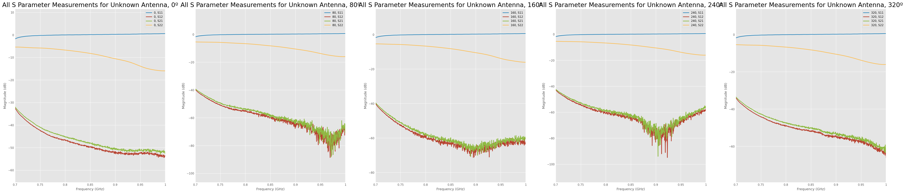
Actual Resonant Frequency
Plotting all Frequencies
filenames_q2_3 = []
networks_q2_3 = []
s21_data_q2_3 = []
points=[0,20,40,60,80,90,100,120,140,160,180,200,220,240,260,270,280,300,320,340]
for i in points:
# we're looking at txt files first
filenames_q2_3 = 'Lab_5/Q2-680MHz/' + f"{i}.S1P"
networks_q2_3.append(rf.Network(filenames_q2_3))
for net in networks_q2_3:
s21_v = net['680.5Mhz'].s_db[0][0][0]
s21_data_q2_3.append(s21_v)
g_tx = 4.03 # dBi -- Isotropic Gain with 680 MHz
l_val = 3e8/(680e6) # meters
D_val = 1.4478 # meters
air_loss = 20 * np.log10(l_val / (4 * np.pi * D_val))
g_rx_list_q2_3 = []
for s21 in s21_data_q2_3:
val = s21 - g_tx - air_loss
g_rx_list_q2_3.append(val)
# plot
ax = plt.subplot(111, polar=True)
# set zero west
# let set an azimuth for example, pi
angles_q2_3 = [p * 2 * np.pi / 360 for p in points]
plt.plot(angles_q2_3, g_rx_list_q2_3)
plt.title("Patch Antenna Frequency")
print(max(g_rx_list_q2_3))0.8242584027777866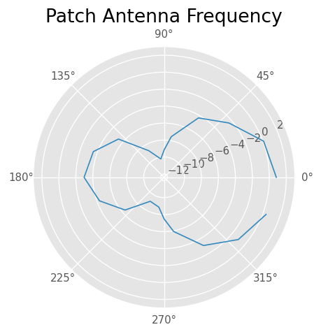
filename_q2_3 = 'Lab_5/Q2-680MHz/0.S2P'
network_q2_3 = rf.Network(filename_q2_3)
fig, axs = plt.subplots(1, 1, figsize=(20, 10))
rf.stylely()
network_q2_3.plot_s_db(lw=5, axis=axs)
axs.set_title("All S Parameter Measurements for Patch Antenna, 0º", fontsize=50)Text(0.5, 1.0, 'All S Parameter Measurements for Patch Antenna, 0º')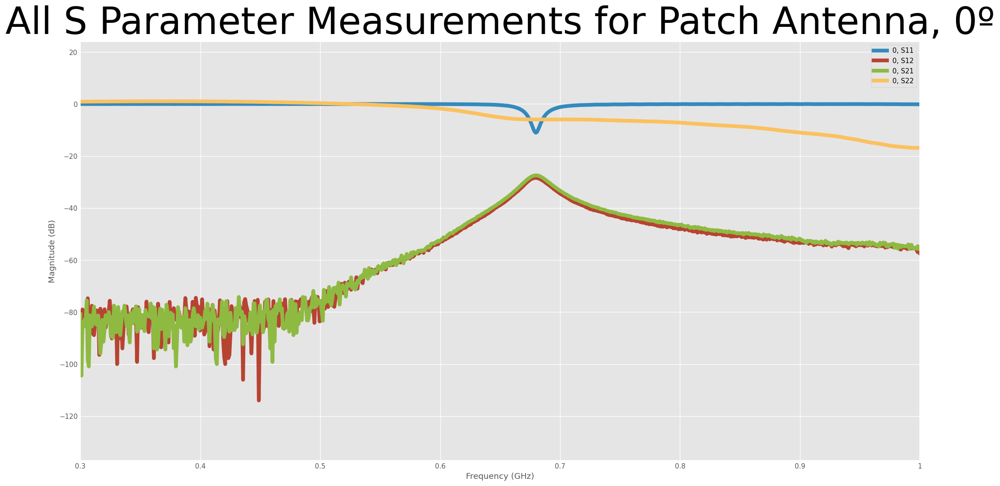
plt.xticks([np.pi/4, np.pi/2, 3*np.pi/4, np.pi, 5*np.pi/4, 3*np.pi/2, 7*np.pi/4])
plt.plot(angles_patch, g_rx_list_q2_1, 'ro-', label="1.455MHz")
plt.plot(angles_2, g_rx_list_q2_2, 'bo-', label="728.155MHz")
plt.plot(angles_q2_3, g_rx_list_q2_3, 'go-', label="680MHz")
print(g_rx_list_q2_3[0])
plt.legend()
plt.title("Gain of S21 at Different Frequencies")
plt.ylabel("Gain of S21")
plt.xlabel("Angle (CCW) [rad/sec]")0.8236438713486223Text(0.5, 0, 'Angle (CCW) [rad/sec]')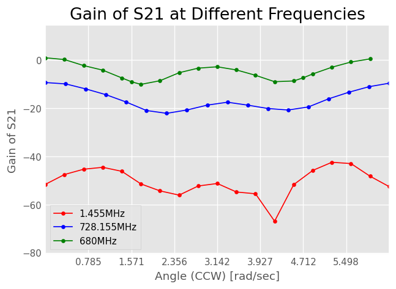
Yagi Antenna
filenames_yagi = []
networks_yagi = []
s21_data_yagi = []
g_tx = 7.44 # dBi -- Isotropic Gain with 680 MHz
l_val = 3e8/(680e6) # meters
D_val = 1.4478 # meters
air_loss = 20 * np.log10(l_val / (4 * np.pi * D_val))
points=[0,20,40,60,80,90,100,120,140,160,180,200,220,240,260,270,280,300,320,340]
for i in points:
# we're looking at txt files first
filenames_yagi = 'Lab_5/Q3/' + f"{i}.S2P"
networks_yagi.append(rf.Network(filenames_yagi))
for net in networks_yagi:
s21_v = net['915Mhz'].s21.s_db[0][0][0]
s21_data_yagi.append(s21_v)
g_rx_list_yagi = []
for s21 in s21_data_yagi:
val = s21 - g_tx - air_loss
g_rx_list_yagi.append(val)
# plot
ax = plt.subplot(111, polar=True)
# set zero west
# let set an azimuth for example, pi
angles_yagi = [p * 2 * np.pi / 360 for p in points]
plt.plot(angles_yagi, g_rx_list_yagi)
plt.title("Yagi Antenna Frequency")Text(0.5, 1.0, 'Yagi Antenna Frequency')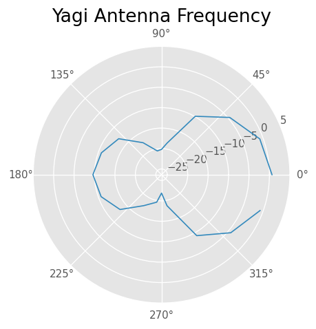
networks_yagi[0].s21.plot_s_db(label="yagi")
networks[0].s21.plot_s_db(label="1.455 GHz")
networks_2[0].s21.plot_s_db(label="728.155MHz")
networks_q2_3[0].plot_s_db(label="680MHz")/Users/zoeworrall/Desktop/Mudd/2024_4/RF_Circuitry/rf_venv/lib/python3.12/site-packages/skrf/mathFunctions.py:268: RuntimeWarning: divide by zero encountered in log10
out = 20 * np.log10(z)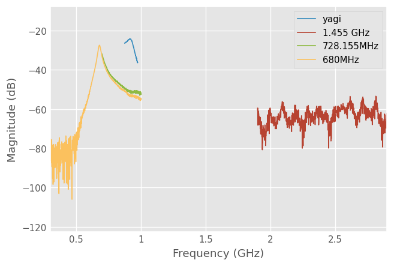
Extracted impedance of patch antenna and comparison to theory
# we're looking at txt files first
filename_q2 = 'Lab_5/Q2-680MHz/0.S2P'
network_q2 = rf.Network(filename_q2)
network_q2.plot_s_db()
S11_pow = network_q2['680MHz'].s11.s_db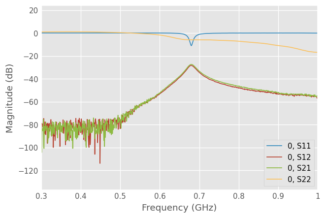
## calculate S11 at 0º - Gain
print(f"S11 in dB is {S11_pow}")
S11_volt = np.exp(S11_pow/20)
z0 = 50
Z_a = z0 * (S11_pow-1)/(S11_pow+1)
print(f"The impedance of the system is {Z_a}")S11 in dB is [[[-11.04927354]]]
The impedance of the system is [[[59.95096806]]]## calculating the impedance with measurements
e_r = 4
L = 0.103
W = 0.131
first_mult = e_r**2 / (e_r - 1)
secnd_mult = (L/W)**2
x_p = 0.025
Z_a_theory_0 = 90 * first_mult * secnd_mult
internal_mult = np.pi * x_p / L
third_mult = np.pow( np.cos( internal_mult ) , 2 )
Z_a_theory = Z_a_theory_0 * third_mult
print(Z_a_theory)155.1546891529339Z_